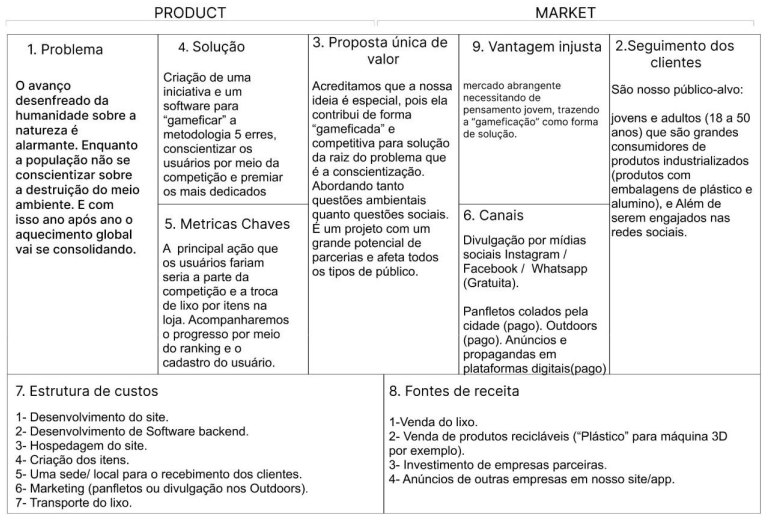

// projetos
O que já entreguei
01
Demoday KickOff 2024.1
Inovação
Sustentabilidade
Ágil
Demoday KickOff 2024.1
— Porto Digital
Solução sustentável para reaproveitamento de resíduos sólidos com impressão 3D
+
🥈 2º Lugar — Demoday Porto Digital
- Atuação em todas as etapas: pesquisa com usuários, definição de requisitos, prototipação e apresentação final
- Aplicação de práticas ágeis (Scrum/Kanban) para organizar o fluxo do time multidisciplinar
- Utilização de Lean Canvas, mapa de empatia e jornada do usuário para validar a proposta
- Criação da identidade visual do projeto e ações de conscientização ambiental
- Resultado qualitativo: equipe alinhada, entregas no prazo e proposta reconhecida pelo júri

02
Portal de Funil de Vendas
ServiceNow
Portal
Estágio · 2025
Portal de Funil de Vendas
— Empresa Parceira
Desenvolvimento de tabela, formulário e dashboard de oportunidades no ServiceNow
+
- Desenvolvimento da tabela de oportunidades para armazenar e estruturar os dados do funil de vendas
- Implementação do formulário de cadastro integrado à tabela correspondente no ServiceNow
- Integração dos dados ao dashboard do portal — permitindo visualização em tempo real das oportunidades registradas
- Resultado qualitativo: time passou a ter visibilidade centralizada do pipeline, antes disperso em planilhas
+
Próximo projeto em construção
Novos desafios e entregas em breve. Fique de olho!